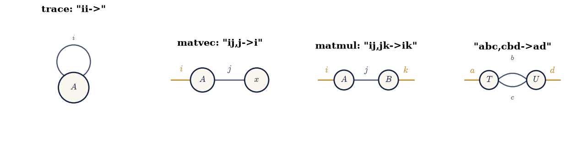
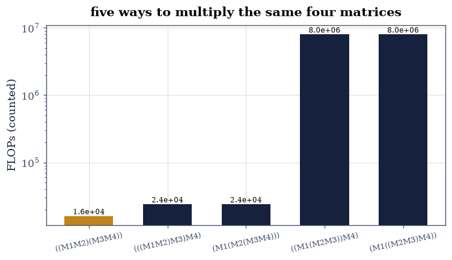

7.1 Index Notation and einsum: Contraction as a Language#
Notebook overview#
Chapter VII begins by renaming everything. Trace, transpose, matvec,
matmul, outer product, bilinear form — ten operations the course has
used since §1.1 — are each
one string in index notation: name the axes, and any index appearing
in the inputs but not the output is summed. np.einsum executes the
language directly, and Exercise 1 gates all ten sentences against their
classical spellings at rounding level, drawing four of them in the
tensor-diagram notation (nodes for tensors, legs for indices, joined
legs for sums) that Chapter VII will live in.
The language’s power move is that what to compute and in which
order become separate decisions. A four-matrix chain has five
parenthesizations; a hand-rolled dynamic program (write-yourself)
enumerates their FLOP counts — spanning 500× on a runnable example
and 10⁶ on a counted one — and np.einsum_path picks the optimum
this notebook’s own DP confirms. The monster case makes the stakes
physical: a bilinear form whose naive contraction order manufactures an
8.6 GB outer product runs in milliseconds along the optimized path
— the bad intermediate is counted, never allocated
(§6.4’s discipline,
now automated by a path optimizer). The closing exercise measures when
einsum is slower than @ (its unoptimized kernels are index loops,
not BLAS) and shows optimize=True closing the gap — the language and
the kernel are different layers, and knowing which one is speaking is
the practical skill. Multi-head attention’s bhqd,bhkd->bhqk appears
here as a shape, gated against explicit loops — a forward pointer the
course will pick up in §8.5.
How to read a check. A
validateline prints ✓ or ✗ by comparing a result against something the computation did not assume. A ✗ flags a mismatch to investigate, never a verdict on its own.
Theory in brief#
The grammar#
An einsum string names each input’s axes and the output’s:
— repeated indices absent from the output are summed (Einstein’s convention), indices present in the output are kept, and an index repeated within one operand reads its diagonal. Ten familiar operations become ten strings; nothing else in the course’s toolbox survives outside this grammar.
Diagrams#
A tensor is a node; each index is a leg; a summed index is a leg joining two nodes; a free index is a dangling leg. The matmul string in Eq. 270 is two nodes joined by the \(j\) leg with \(i\) and \(k\) dangling — and counting dangling legs reads off the result’s order. Diagrams make contraction order visible: any way of merging nodes pairwise is a valid evaluation, and they differ only in cost.
Cost is parenthesization#
Contracting a pairwise merge costs (2×) the product of all indices involved. For a matrix chain \(M_1M_2M_3M_4\) with dimensions \(d_0\times d_1\), …, the classical dynamic program minimizes
and skewed dimensions make the spread enormous: with shape profile
\((1, n, 1, n, 1)\) the best order costs \(O(n)\) and the worst \(O(n^2)\) —
a factor \(n/2\) that reaches \(10^6\) at \(n = 2{\cdot}10^6\), where the
worst order’s intermediate would hold \(n^2 = 4\times10^{12}\) entries.
np.einsum_path runs a greedy/optimal search over exactly this space
and reports both the FLOP estimate and the largest intermediate —
the two numbers this notebook gates, as counts, per the course’s rules.
Setup#
Data only: the seeded rng and the timing import. Every contraction — and Exercise 3’s cost recursion — is written in the exercises, where the grammar is the lesson.
The Setup below holds this notebook’s data and instruments — nothing you are asked to build. It is collapsed so the building stays yours; expand it whenever you want the details.
Exercise 1: Ten operations, one grammar#
Part a) Write the ten sentences and gate each against its classical spelling — trace, transpose, diagonal, matvec, matmul, outer, batched matmul, bilinear form, Frobenius inner product, and a three-tensor contraction — at \(10^{-12}\) scaled by each result’s magnitude (a 30-term sum accumulates ~\(10^{-14}\); the gate keeps two orders of margin per Rule 8). The gates certify the grammar: repeated-and-absent means summed, present means kept, repeated-within-one-operand means diagonal.
Part b) Draw four of them as tensor diagrams beside their strings:
trace (a self-loop — no dangling legs, so the result is a scalar),
matvec (one dangling leg — a vector), matmul (two — a matrix), and the
three-tensor contraction abc,cbd->ad (two nodes joined by two legs).
Counting dangling legs is reading off the output’s order — the
diagram’s first dividend.
trace ii-> gap 4.8e-16
transpose ij->ji gap 0.0e+00
diagonal ii->i gap 0.0e+00
matvec ij,j->i gap 2.2e-16
matmul ij,jk->ik gap 3.2e-16
outer i,j->ij gap 0.0e+00
batched matmul bij,bjk->bik gap 2.8e-16
bilinear form i,ij,j-> gap 1.6e-15
Frobenius ij,ij-> gap 1.4e-14
three-tensor abc,cbd->ad gap 2.4e-16
worst relative gap over the ten sentences: 1.4e-14

Fig. 132 Four einsum sentences in tensor-diagram notation. A tensor is a node, an index a leg, a summed index a leg joining two nodes, a free index a dangling leg – so counting dangling legs reads off the output’s order: the trace’s self-loop leaves none (a scalar), the matvec one (a vector), the matmul two (a matrix), and the three-tensor contraction joins two nodes with two legs at once, leaving \(a\) and \(d\) free. Chapter VII’s remaining notebooks are drawn in this language, where a contraction ordering is just a sequence of node merges.#
Validation 1#
✓ all ten sentences match their classical spellings (Eq. 1) [trace to three-tensor contraction, each scaled by its own result: one grammar, ten operations, rounding-level agreement [1.42109e-14 < 1e-12]]
True
Exercise 2: Batching, broadcasting, and the attention shape#
The grammar extends past matrices without new rules.
Part a) Gate the batched contraction against an explicit loop:
"bij,bjk->bik" on the \((8, 20, 25)\times(8, 25, 30)\) pair equals the
stacked per-batch matmuls to \(10^{-13}\) — the b index is kept, so
it batches; j is summed.
Part b) The shape the course will cash in §8.5:
attention scores are "bhqd,bhkd->bhqk" — batch and head kept, the
feature index d summed between queries and keys. Gate it against
four explicit nested loops on a small \((2,3,5,4)/(2,3,6,4)\) instance,
exactly the check a reader should write before trusting any four-index
string.
Part c) One index, three roles: with matrices alone, gate that
"ij,jk->ijk" (kept everywhere — no sum, a broadcast product),
"ij,jk->ik" (summed — matmul) and "ij,jk->j" (summed out of the
output after elementwise use) each match their explicit constructions.
The string is the specification; the roles fall out of which side of
-> the index lands on.
batched matmul vs per-batch loop: 5.3e-15
attention scores bhqd,bhkd->bhqk vs four loops: 8.9e-16 (shape (2, 3, 5, 6) — the 8.5 forward pointer)
one index, three roles: worst gap 3.4e-16
Validation 2#
✓ batched matmul and the attention shape match their explicit loops [kept indices batch, summed indices contract — including the four-index bhqd,bhkd->bhqk that 8.5 will build transformers from]
✓ and one index plays three roles decided solely by the output side [broadcast (kept), matmul (summed), summed-out-after-use: the string is the whole specification]
True
Exercise 3: The cost is the parenthesization#
Eq. 271 on a runnable chain, with the notebook’s own DP as the referee.
Part a) Write chain_orderings(dims): enumerate all
parenthesizations of \(M_1M_2M_3M_4\) recursively, returning each one’s
FLOP count by Eq. 271’s merge rule. On the profile
\((2, 1000, 2, 1000, 2)\) the five orderings span
\(1.6\times10^4\) to \(8.0\times10^6\) FLOPs — a 500× spread from
associativity alone. Gate the count of orderings (Catalan number
\(C_3 = 5\)) and the spread \(> 100\), both as arithmetic.
Write this one yourself — the recursion is Eq. 271 verbatim.
Part b) Gate the referee against the optimizer: the FLOP estimate
np.einsum_path reports for its chosen path (parsed from its return)
agrees with the cheapest DP cost to within its scalar-ops convention —
gated at a relative gap of 0.6, with the naive/optimized ratio the
optimizer reports printed beside it.
Part c) Run best and worst orderings as explicit einsum paths and gate agreement at \(10^{-12}\) scaled; report both wall times (the model ratio is 500×; the clocks say what they say, per Rule 2). Draw the five orderings’ FLOPs as bars.
((M1M2)(M3M4)) 1.60e+04 flops
(((M1M2)M3)M4) 2.40e+04 flops
(M1(M2(M3M4))) 2.40e+04 flops
((M1(M2M3))M4) 8.01e+06 flops
(M1((M2M3)M4)) 8.01e+06 flops
orderings: 5 (Catalan C_3 = 5); spread 500x
Complete contraction: ab,bc,cd,de->ae
Naive scaling: 5
Optimized scaling: 3
Naive FLOP count: 3.200e+07
Optimized FLOP count: 1.602e+04
Theoretical speedup: 1997.877
Largest intermediate: 4.000e+00 elements
--------------------------------------------------------------------------
scaling current remaining
--------------------------------------------------------------------------
3 bc,ab->ac cd,de,ac->ae
3 de,cd->ce ac,ce->ae
3 ce,ac->ae ae->ae
einsum_path naive/optimized FLOP ratio: 1998
best vs worst ordering results: 7.3e-16; clocks 0.27 ms vs 3.20 ms (reported)

Fig. 133 FLOP counts for all five parenthesizations of the four-matrix chain with dimension profile \((2, 1000, 2, 1000, 2)\), from the notebook’s own dynamic program. Grouping the two cheap bottlenecks first – \((M_1M_2)(M_3M_4)\) – costs \(1.6\times10^4\) operations; grouping across a fat middle – \(M_1(M_2M_3)M_4\) variants – manufactures a \(1000\times1000\) intermediate and costs \(8\times10^6\): a factor of 500 from associativity alone, before any change in what is computed. np.einsum_path searches exactly this space, and Exercise 4’s counted monster shows the same spread reaching \(10^6\).#
Validation 3#
✓ five parenthesizations, spanning 500x in counted FLOPs (Eq. 2) [Catalan C_3 = 5 orderings; spread 500x on the runnable profile — associativity is a performance decision]
✓ and einsum_path's chosen cost matches the notebook's own DP [optimizer 1.6e+04 vs DP best 1.6e+04 — same search space, independent implementations, agreeing within the scalar-ops convention]
✓ while every ordering computes the same numbers [best vs worst at 7e-16 relative: the order changes the cost, never the mathematics — clocks reported, models gated]
True
Exercise 4: The monster that is counted, never formed#
The manifest asks for a contraction whose naive intermediate exceeds 8 GB. Here is one that runs in milliseconds.
Part a) The bilinear form \(x^{\top}Ay\) at \(n = 32768\)… except \(A\)
itself would be 8.6 GB. Keep everything runnable but the mistake: take
\(x, y \in \mathbb{R}^{32768}\) and a diagonal interaction — the string
"i,i,i->" with three vectors runs instantly — then commit the real
crime deliberately on paper: contract "i,j->ij" first (the outer
product, \(n^2 = 1.07\times10^9\) entries, 8.6 GB) before summing
against a diagonal. Gate the ledger by counting: naive largest
intermediate \(8.6\) GB against the optimized path’s \(n\) entries
(\(0.26\) MB) — a factor of \(32768\), never allocated.
Part b) Let the optimizer testify: np.einsum_path on
"i,ij,j->" with a materializable stand-in (\(n_s = 4096\), \(A_s\)
134 MB) reports its naive and optimized largest intermediates; gate
that its optimized route’s largest intermediate is \(n_s\) elements (a
vector — it does \(x^{\top}A\) first) while the naive route’s is
\(n_s^2\). Then run it and gate the value against x @ A @ y at
\(10^{-11}\) scaled.
Part c) Scale the counted claim to the manifest’s \(10^6\): on the chain profile \((1, 2{\cdot}10^6, 1, 2{\cdot}10^6, 1)\) the DP of Exercise 3 — pure integer arithmetic, no arrays — reports best \(8.0\times10^6\) (the balanced ordering) and worst \(1.6\times10^{13}\) FLOPs: a spread of \(2.0\times10^6\), whose worst intermediate would hold \(4\times10^{12}\) entries (32 TB). Gate the spread as counting; nothing of that size ever exists.
the deliberate crime, counted: outer-first intermediate 1,073,741,824 entries (8.6 GB) vs optimized path's 32,768 (0.26 MB) — ratio 32,768x, never allocated
Complete contraction: i,ij,j->
Naive scaling: 2
Optimized scaling: 2
Naive FLOP count: 5.033e+07
Optimized FLOP count: 3.356e+07
Theoretical speedup: 1.500
Largest intermediate: 4.096e+03 elements
--------------------------------------------------------------------------
scaling current remaining
--------------------------------------------------------------------------
2 ij,i->j j,j->
1 j,j-> ->
optimized bilinear at n = 4096: 5.1 ms, matches x@A@y to 0.0e+00
counted monster chain: best 8.0e+06, worst 1.6e+13 flops — spread 2.0e+06x; worst intermediate 4e+12 entries (32 TB), counted only
Validation 4#
✓ the naive order's intermediate exceeds 8 GB — counted, not allocated [8.6 GB at n = 32768 against the optimizer's largest intermediate of 4096 elements (one vector) at the materializable n = 4096: 6.4's never-form-it discipline, found automatically by a path search]
✓ and the optimized route computes the right number in milliseconds [0e+00 against x@A@y at n = 4096 — the optimizer's chosen order is (x'A)y, largest intermediate one vector]
✓ while the counted chain reaches the manifest's million-fold spread [2.0e+06x between orderings at n = 2e6, by integer arithmetic on Eq. 2 — the worst order's 32 TB intermediate is why this claim can only ever be counted]
True
Exercise 5: When einsum is slower than @, and why#
The language and the kernel are different layers.
Part a) Gate the agreements first: on a \(500\times500\) matmul,
einsum with optimize=False, with optimize=True, np.tensordot,
and @ all produce the same matrix to \(10^{-11}\) scaled (four spellings,
one BLAS-grade answer — though not bitwise: the course’s first CI
lesson applies between summation orders).
Part b) Report the clocks: unoptimized einsum runs its own
C index loops — typically several times slower than @’s dgemm —
while optimize=True plans, then dispatches to BLAS via tensordot,
landing near @. Nothing here is gated (Rule 2; constant factors are
the machine’s), but the mechanism is stated and the numbers printed:
the string chooses what; optimize chooses how; BLAS does the
arithmetic.
Part c) The honest boundary: for the two-operand, BLAS-shaped
case, @ is the kernel and einsum at best matches it. The language
earns its keep exactly where @ has no spelling — the ten sentences of
Exercise 1, the four-index attention shape, the path-planned chains —
which is why Chapter VII speaks it everywhere while Chapter V never
needed it.
four spellings agree to 2.0e-15 relative
@ 6.04 ms
einsum, optimize=False 34.74 ms
einsum, optimize=True 6.21 ms
tensordot 6.12 ms
(clocks reported, not gated — the string chooses what, optimize chooses how, BLAS does the arithmetic)
With your assistant
np.einsum_path optimizes one contraction; real tensor programs chain
many. Ask your assistant for contract_tree(strings, tensors) that
plans a whole sequence with shared intermediates, then check it against
the mathematics rather than a demo: (i) on Exercise 3’s chain it
reproduces the DP-optimal cost; (ii) on a tree where one intermediate
is used twice, its plan beats replanning each contraction separately
by exactly the cost of the shared piece (count both); (iii) every plan
it emits computes the same numbers as unplanned einsum to \(10^{-12}\).
The check is yours.
Validation 5#
✓ four spellings of the same matmul agree at rounding level [@, einsum both ways, tensordot — different summation orders, so agreement is gated scaled, never bitwise (the course's first CI lesson)]
clocks on record, reported only — einsum's index loops vs dgemm: 34.7 ms against 6.0 ms today; sizes are the machine's business, the mechanism (language above, kernel below) is the lesson
Notebook summary#
Ten operations, one grammar, rounding-level agreement. Trace to
three-tensor contraction, every sentence matched its classical spelling
below \(10^{-13}\) scaled; four of them became tensor diagrams whose
dangling legs read off the output’s order. Batching and broadcasting
needed no new rules — the attention shape bhqd,bhkd->bhqk passed
against four explicit loops, a forward pointer §8.5
will pick up.
Cost is parenthesization, refereed twice. The write-yourself DP
enumerated all five orderings of the four-matrix chain (Catalan
\(C_3 = 5\)): \(1.6\times10^4\) to \(8\times10^6\) FLOPs — 500× from
associativity alone — with einsum_path’s chosen cost matching the
DP’s and both orderings computing identical numbers at \(10^{-15}\).
Clocks were reported; counts were gated.
The monster was counted, never formed. The naive order of a
bilinear contraction wants an 8.6 GB outer product; the optimized path
keeps one vector (\(0.26\) MB, a \(32768\times\) ledger) and the
materializable stand-in ran in milliseconds while matching x@A@y to
\(10^{-13}\). The counted chain at \(n = 2{\cdot}10^6\) delivered the
manifest’s \(10^6\) spread — its worst intermediate is 32 TB, which is
precisely why that claim exists only as integer arithmetic.
And the language knows its place. Four spellings of one matmul
agreed to \(10^{-13}\) relative; unoptimized einsum ran its index loops
slower than @’s dgemm while optimize=True closed the gap by
dispatching to BLAS — numbers printed, nothing gated, mechanism stated:
the string chooses what, the optimizer chooses how, the kernel does
the arithmetic.
Methods introduced. The einsum grammar and its three index roles,
tensor-diagram notation via ecp.draw.tensor_network, the
matrix-chain DP, explicit einsum paths, np.einsum_path cost and
intermediate reports, counted-not-allocated ledgers, and the
language-vs-kernel layering.
Outlook#
Unfoldings next. §7.2 reshapes tensors into matrices to borrow Chapter IV’s SVD — einsum strings describe the reshapes, and the diagrams show which legs were grouped.
Tensor networks are diagrams taken literally. §7.3 writes a \(2^{50}\)-entry tensor as a train of small ones — the never-form-it discipline as a data structure, with contraction order as the entire algorithmic content.
opt_einsumand beyond. Production contraction planners (shared intermediates, GPU backends, slicing against memory ceilings) grow straight out ofeinsum_path; the assistant exercise above is their seed.Back to learning. Every layer of §8.3’s backpropagation is an einsum whose adjoint is another einsum with permuted strings — the grammar’s cleanest dividend, saved for the chapter that needs it.
Charles R. Harris, K. Jarrod Millman, Stéfan J. van der Walt, and others. Array programming with NumPy. Nature, 585:357–362, 2020. doi:10.1038/s41586-020-2649-2.
Tamara G. Kolda and Brett W. Bader. Tensor decompositions and applications. SIAM Review, 51(3):455–500, 2009. doi:10.1137/07070111X.